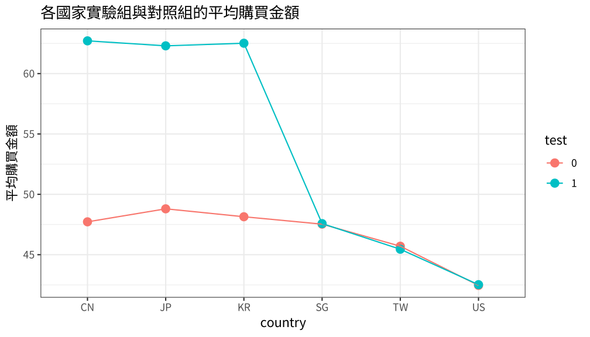
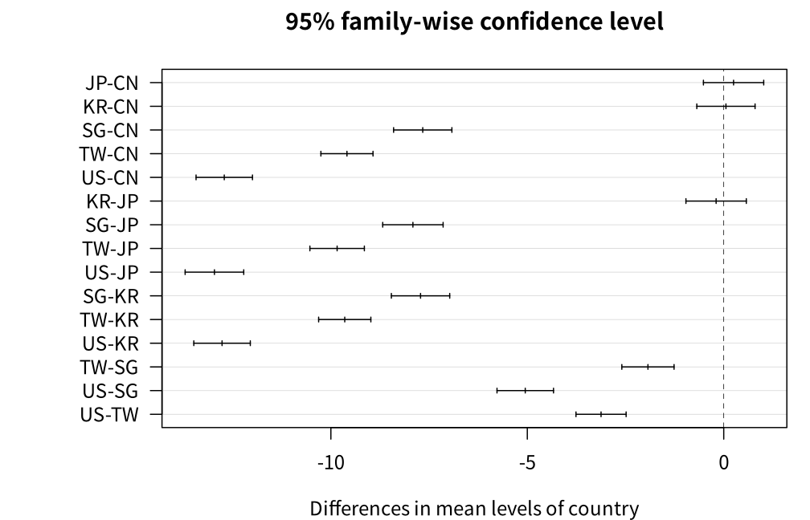
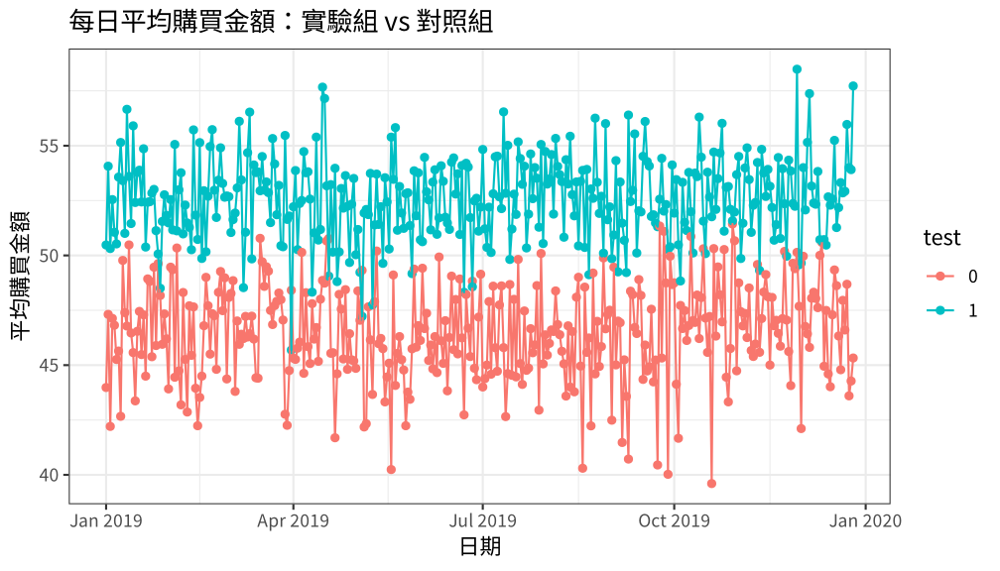
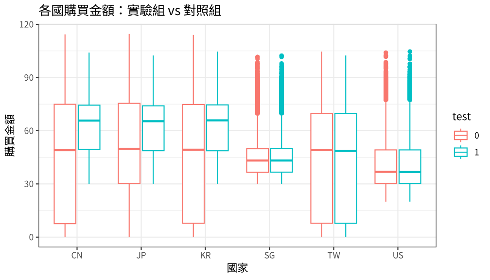
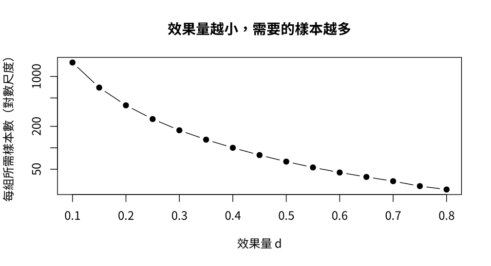

14.2 情境一：比較平均數（購買金額）abtest.RData 有兩份資料。data1 是某網路商城的購買資料：10 萬位使用者隨機分成實驗組（test = 1）與對照組（test = 0）。
複製 R load ( "abtest.RData" )
str ( data1 )
## 'data.frame': 100000 obs. of 9 variables:
## $ userid : num 109668 823425 215458 848894 310869 ...
## $ sex : Factor w/ 2 levels "female","male": 2 2 2 1 1 1 1 1 2 2 ...
## $ country : Factor w/ 6 levels "CN","JP","KR",..: 2 4 1 3 4 6 1 2 4 6 ...
## $ purchase: num 71.7 58.1 69.1 5.2 47.3 ...
## $ device : Factor w/ 3 levels "android","ios",..: 1 2 3 2 3 3 1 1 1 2 ...
## $ test : Factor w/ 2 levels "0","1": 2 1 1 1 1 2 1 2 1 1 ...
## $ age : num 44 55 24 61 56 30 41 43 62 42 ...
## $ service : Factor w/ 3 levels "golden","normal",..: 3 2 3 3 2 1 3 1 2 2 ...
## $ date : Date, format: "2019-03-20" ...## userid sex country purchase
## Min. : 17 female:50318 CN:15047 Min. : 0.0
## 1st Qu.:248966 male :49682 JP:13105 1st Qu.: 34.5
## Median :498124 KR:14961 Median : 47.8
## Mean :498608 SG:14945 Mean : 49.5
## 3rd Qu.:747514 TW:24850 3rd Qu.: 70.1
## Max. :999987 US:17092 Max. :114.6
## device test age service
## android:45033 0:50461 Min. :15.0 golden:20022
## ios :29927 1:49539 1st Qu.:28.0 normal:44951
## pc :25040 Median :41.0 VIP :35027
## Mean :41.1
## 3rd Qu.:54.0
## Max. :67.0
## date
## Min. :2019-01-01
## 1st Qu.:2019-04-01
## Median :2019-06-30
## Mean :2019-06-29
## 3rd Qu.:2019-09-28
## Max. :2019-12-26先做描述性比較
複製 R data1 %>% group_by ( test ) %>% summarise ( n = n (), mean_purchase = mean ( purchase ))
## # A tibble: 2 × 3
## test n mean_purchase
## <fct> <int> <dbl>
## 1 0 50461 46.5
## 2 1 49539 52.6複製 R data1 %>% group_by ( sex ) %>% summarise ( mean_purchase = mean ( purchase ))
## # A tibble: 2 × 2
## sex mean_purchase
## <fct> <dbl>
## 1 female 44.1
## 2 male 55.0複製 R data1 %>% group_by ( device ) %>% summarise ( mean_purchase = mean ( purchase ))
## # A tibble: 3 × 2
## device mean_purchase
## <fct> <dbl>
## 1 android 49.5
## 2 ios 49.5
## 3 pc 49.6複製 R data1 %>% group_by ( service ) %>% summarise ( mean_purchase = mean ( purchase ))
## # A tibble: 3 × 2
## service mean_purchase
## <fct> <dbl>
## 1 golden 49.2
## 2 normal 49.6
## 3 VIP 49.6複製 R data1 %>% group_by ( country ) %>% summarise ( mean_purchase = mean ( purchase ))
## # A tibble: 6 × 2
## country mean_purchase
## <fct> <dbl>
## 1 CN 55.2
## 2 JP 55.4
## 3 KR 55.2
## 4 SG 47.6
## 5 TW 45.6
## 6 US 42.5實驗組平均購買 52.58、對照組 46.51，差 6.08。但平均數有差不等於 統計上顯著——要檢定。
兩樣本 t 檢定
\(H_0: \mu_1 - \mu_0 = 0\)，\(H_a: \mu_1 - \mu_0 > 0\)（實驗組平均購買金額較高）：
複製 R t.test ( data1 [ data1 $ test == 1 , ] $ purchase ,
data1 [ data1 $ test == 0 , ] $ purchase ,
alternative = "greater" )
##
## Welch Two Sample t-test
##
## data: data1[data1$test == 1, ]$purchase and data1[data1$test == 0, ]$purchase
## t = 40, df = 96892, p-value <2e-16
## alternative hypothesis: true difference in means is greater than 0
## 95 percent confidence interval:
## 5.824 Inf
## sample estimates:
## mean of x mean of y
## 52.58 46.51
alternative = "greater"：單尾檢定，對立假設是「第一組 > 第二組」。預設 "two.sided"（雙尾：不相等）。t = 39.72，p 值 <2e-16，遠小於 0.05，拒絕 \(H_0\) ：實驗組的平均購買金額顯著高於對照組。
R 預設做的是 Welch t 檢定 （不假設兩組變異數 相等），較穩健。
ANOVA：多個因子一起看
除了實驗組別，國家、裝置、性別、會員等級也可能影響購買金額。變異數分析 （ANOVA）同時檢定多個類別因子：
複製 R aov.model <- aov ( purchase ~ test + country + device + sex + service , data = data1 )
summary ( aov.model )
## Df Sum Sq Mean Sq F value Pr(>F)
## test 1 922658 922658 1740.90 <2e-16 ***
## country 5 2723850 544770 1027.89 <2e-16 ***
## device 2 444 222 0.42 0.66
## sex 1 2986632 2986632 5635.26 <2e-16 ***
## service 2 1919 959 1.81 0.16
## Residuals 99988 52992642 530
## ---
## Signif. codes: 0 '***' 0.001 '**' 0.01 '*' 0.05 '.' 0.1 ' ' 1每一列是一個因子：F value 越大、Pr(>F)（p 值）越小，代表這個因子的各組平均數有顯著差異。這裡 test、country、sex 顯著（p 值極小，標 ***），device 與 service 不顯著——購買金額和使用的裝置、會員等級無關。
交互作用：效果因人而異？
新設計對每種人的效果都一樣嗎？交互作用 test * sex 代表 test + sex + test:sex：
複製 R interaction.model <- aov ( purchase ~ test * sex + test * country , data = data1 )
summary ( interaction.model )
## Df Sum Sq Mean Sq F value Pr(>F)
## test 1 922658 922658 1817 <2e-16 ***
## sex 1 2986577 2986577 5881 <2e-16 ***
## country 5 2723022 544604 1072 <2e-16 ***
## test:sex 1 941731 941731 1854 <2e-16 ***
## test:country 5 1277501 255500 503 <2e-16 ***
## Residuals 99986 50776656 508
## ---
## Signif. codes: 0 '***' 0.001 '**' 0.01 '*' 0.05 '.' 0.1 ' ' 1test:sex、test:country 這兩列就是交互作用。若顯著，代表新設計在不同性別（或國家）的效果大小不同——例如對某些國家特別有效，可以針對那些市場優先推廣。
複製 R data1 %>%
group_by ( country , test ) %>%
summarise ( mean_purchase = mean ( purchase ), .groups = "drop" ) %>%
ggplot ( aes ( x = country , y = mean_purchase , color = test , group = test )) +
geom_point ( size = 3 ) + geom_line () +
labs ( title = "各國家實驗組與對照組的平均購買金額" , y = "平均購買金額" ) +
theme_bw ()

兩條線如果平行，代表沒有交互作用（每個國家的提升幅度一樣）；不平行就代表效果因國家而異。
事後檢定：Tukey HSD
ANOVA 只告訴你「至少有一組 不同」，沒說是哪幾組。Tukey HSD （honest significant difference）做所有兩兩比較，並校正多重比較的問題：
複製 R aov.model <- aov ( purchase ~ test * sex + test * country , data = data1 )
TukeyHSD ( aov.model , "test" )
## Tukey multiple comparisons of means
## 95% family-wise confidence level
##
## Fit: aov(formula = purchase ~ test * sex + test * country, data = data1)
##
## $test
## diff lwr upr p adj
## 1-0 6.075 5.796 6.355 0複製 R TukeyHSD ( aov.model , "country" )
## Tukey multiple comparisons of means
## 95% family-wise confidence level
##
## Fit: aov(formula = purchase ~ test * sex + test * country, data = data1)
##
## $country
## diff lwr upr p adj
## JP-CN 0.25020 -0.5171 1.0175 0.9391
## KR-CN 0.05616 -0.6853 0.7976 0.9999
## SG-CN -7.66165 -8.4033 -6.9200 0.0000
## TW-CN -9.59088 -10.2542 -8.9275 0.0000
## US-CN -12.71387 -13.4318 -11.9960 0.0000
## KR-JP -0.19405 -0.9624 0.5743 0.9796
## SG-JP -7.91185 -8.6804 -7.1433 0.0000
## TW-JP -9.84108 -10.5344 -9.1478 0.0000
## US-JP -12.96407 -13.7097 -12.2184 0.0000
## SG-KR -7.71780 -8.4605 -6.9751 0.0000
## TW-KR -9.64704 -10.3116 -8.9825 0.0000
## US-KR -12.77003 -13.4890 -12.0510 0.0000
## TW-SG -1.92923 -2.5940 -1.2645 0.0000
## US-SG -5.05222 -5.7714 -4.3330 0.0000
## US-TW -3.12299 -3.7611 -2.4848 0.0000
diff：兩組平均數差；lwr、upr：95% 信賴區間 ；p adj：校正後的 p 值。信賴區間不包含 0（或 p adj < 0.05）就代表這兩組有顯著差異 。
複製 R par ( mar = c ( 4 , 7 , 3 , 1 ))
plot ( TukeyHSD ( aov.model , "country" ), las = 1 )

圖中每一條橫線是一對國家的差異信賴區間，跨過中間虛線（0）的就是不顯著的。
為什麼不直接做很多次 t 檢定？6 個國家有 15 對，每次 α = 0.05，做 15 次至少錯一次的機率高達 \(1 - 0.95^{15} \approx 54\%\)。Tukey HSD 把整體的型一錯誤控制在 5%。
用圖確認差異是穩定的
複製 R daily.purchase <- data1 %>%
group_by ( date , test ) %>%
summarise ( purchase_amount = mean ( purchase ), .groups = "drop" )
ggplot ( daily.purchase , aes ( x = date , y = purchase_amount , colour = as.factor ( test ))) +
geom_point () + geom_line () +
labs ( x = "日期" , y = "平均購買金額" , colour = "test" ,
title = "每日平均購買金額：實驗組 vs 對照組" ) +
theme_bw ()

如果實驗組每天 都比較高，差異就是穩定的；如果只有某幾天特別高（例如剛好碰上檔期），結論要保守。實驗剛上線的頭幾天也可能有「新奇效應」（使用者因為新鮮多點幾下），要觀察夠長的時間。
複製 R ggplot ( data1 , aes ( x = country , y = purchase , colour = test )) +
geom_boxplot () +
labs ( x = "國家" , y = "購買金額" , title = "各國購買金額：實驗組 vs 對照組" ) +
theme_bw ()

Concept Check：14.2 情境一：比較平均數（購買金額） 題目照期末考的題型自編（選擇、填空、簡答、寫程式），不是老師出的題目。選擇與填空用英文題幹，附中文題意。
After a significant one-way ANOVA across six countries, why do we use Tukey HSD instead of running 15 separate t-tests?
(A) It controls the family-wise Type I error (B) Tukey HSD does not need the data to be numeric (C) It always gives smaller p-values than t-tests (D) It tests the interaction between two factors 顯示解答 中文題意
ANOVA 顯著後，為什麼用 Tukey HSD 而不是做 15 次 t 檢定？
答案 (A) It controls the family-wise Type I error
解析
多次檢定會累積型一錯誤：15 次各 5%，至少一次誤判的機率約 54%。Tukey HSD 校正多重比較，把整體錯誤率控制在 5%。
The ANOVA table shows that the interaction test:country is significant. Explain what this means for the business.
顯示解答 中文題意
ANOVA 中 test:country 交互作用顯著，對商業決策代表什麼？
答案 The effect of the new design (test) on purchase amount is not the same in every country: in some countries the treatment raises purchases more than in others (or not at all). So the company should not just report one average effect; it should look at the effect country by country (e.g., group means or an interaction plot), roll out the new design first where the uplift is largest, and investigate why it works less well elsewhere.
解析
交互作用 = 處理效果隨族群而變；可依此做分眾推廣。
R's t.test(y ~ group) uses the Welch version by default. What does Welch's test NOT assume?
(A) That observations in the two groups are independent (B) That the two groups have equal variances (C) That each group mean is roughly normally distributed (D) That the data come from two separate groups 顯示解答 中文題意
R 預設的 Welch t 檢定「不」假設什麼？
答案 (B) That the two groups have equal variances
解析
傳統 t 檢定假設兩組變異數相等，Welch 版不需要這個假設，所以是較安全的預設。如果確定變異數相等，可以設 var.equal = TRUE。
A one-way ANOVA comparing four page designs gives p < 0.01. What can you conclude, and what is the next step?
(A) All four designs differ; no further test is needed (B) At least one mean differs; use TukeyHSD() to see which pairs (C) Design 4 is the best one; report its mean to the manager right away (D) The variances differ; switch to a chi-squared test 顯示解答 中文題意
四種網頁設計做 ANOVA 得到 p < 0.01，能下什麼結論？下一步做什麼？
答案 (B) At least one mean differs; use TukeyHSD() to see which pairs
解析
ANOVA 的 \(H_0\) 是「所有平均都相等」，拒絕只代表至少有一組不同，不知道是哪幾組。Tukey HSD 做所有兩兩比較並控制整體的錯誤率。
14.3 情境二：比較比例（轉換率）data2 是某旅館訂房網站的資料：舊介面（website = A）與新介面（website = B），以及使用者有沒有訂房（purchased）。
## 'data.frame': 1451 obs. of 4 variables:
## $ website : chr "A" "A" "A" "A" ...
## $ purchased : logi FALSE FALSE FALSE FALSE FALSE FALSE ...
## $ length_of_stay: int 0 0 0 0 0 0 0 0 0 0 ...
## $ revenue : num 0 0 0 0 0 0 0 0 0 0 ...複製 R table ( data2 $ website , data2 $ purchased )
##
## FALSE TRUE
## A 701 20
## B 693 37手算轉換率與提升幅度
複製 R subset_A <- data2 %>% filter ( website == "A" & purchased == TRUE )
purchased_A <- nrow ( subset_A )
visitors_A <- nrow ( data2 %>% filter ( website == "A" ))
phat_A <- purchased_A / visitors_A
subset_B <- data2 %>% filter ( website == "B" & purchased == TRUE )
purchased_B <- nrow ( subset_B )
visitors_B <- nrow ( data2 %>% filter ( website == "B" ))
phat_B <- purchased_B / visitors_B
c ( phat_A = phat_A , phat_B = phat_B )
## phat_A phat_B
## 0.02774 0.05068複製 R uplift <- ( phat_B - phat_A ) / phat_A * 100
uplift
## [1] 82.72A 的轉換率 2.77%、B 的轉換率 5.07%。提升幅度 （uplift）= (B − A) / A = 82.72%：B 比 A 好了約 83%。注意這是相對 提升；絕對差距只有 2.29 個百分點。報告時兩者都要寫清楚。
兩比例 z 檢定（手算）
\(H_0: p_A = p_B\)。在 \(H_0\) 下兩組轉換率相同，用合併比例 估計共同的 p：
\[\hat p_{pool}=\frac{x_A+x_B}{n_A+n_B},\quad SE_{pool}=\sqrt{\hat p_{pool}(1-\hat p_{pool})\left(\frac1{n_A}+\frac1{n_B}\right)},\quad z=\frac{\hat p_B-\hat p_A}{SE_{pool}}\]
複製 R p_pool <- ( purchased_A + purchased_B ) / ( visitors_A + visitors_B )
SE_pool <- sqrt ( p_pool * ( 1 - p_pool ) * ( 1 / visitors_A + 1 / visitors_B ))
d_hat <- phat_B - phat_A # 點估計：比例差
z_score <- d_hat / SE_pool
p_value <- pnorm ( q = - z_score , mean = 0 , sd = 1 ) * 2 # 雙尾 p 值
c ( d_hat = d_hat , z = z_score , p_value = p_value )
## d_hat z p_value
## 0.02295 2.24955 0.02448複製 R ci <- c ( d_hat - qnorm ( 0.975 ) * SE_pool , d_hat + qnorm ( 0.975 ) * SE_pool ) # 95% 信賴區間
ci
## [1] 0.002954 0.042938
pnorm(-z) 是標準常態分配左尾的機率；雙尾檢定再乘以 2。qnorm(0.975) = 1.96：95% 信賴區間的臨界值。p 值 0.0245 < 0.05，拒絕 \(H_0\)；比例差的 95% 信賴區間 [0.003, 0.0429] 不包含 0 ，兩種判斷方式結論一致：新介面的轉換率顯著較高。
各組自己的 95% 信賴區間：
複製 R se_hat_A <- sqrt ( phat_A * ( 1 - phat_A ) / visitors_A )
ci_A <- c ( phat_A - qnorm ( 0.975 ) * se_hat_A , phat_A + qnorm ( 0.975 ) * se_hat_A )
se_hat_B <- sqrt ( phat_B * ( 1 - phat_B ) / visitors_B )
ci_B <- c ( phat_B - qnorm ( 0.975 ) * se_hat_B , phat_B + qnorm ( 0.975 ) * se_hat_B )
rbind ( A = ci_A , B = ci_B )
## [,1] [,2]
## A 0.01575 0.03973
## B 0.03477 0.06660（老師網站的練習 3：兩個區間有沒有重疊？注意「各自的區間有重疊」不代表 差異不顯著——判斷差異要看「差」的信賴區間，也就是上面的 ci。）
用內建函數驗證
複製 R prop.test ( c ( purchased_A , purchased_B ), c ( visitors_A , visitors_B ))
##
## 2-sample test for equality of proportions with continuity
## correction
##
## data: c(purchased_A, purchased_B) out of c(visitors_A, visitors_B)
## X-squared = 4.5, df = 1, p-value = 0.03
## alternative hypothesis: two.sided
## 95 percent confidence interval:
## -0.044246 -0.001645
## sample estimates:
## prop 1 prop 2
## 0.02774 0.05068複製 R chisq.test ( data2 $ purchased , data2 $ website )
##
## Pearson's Chi-squared test with Yates' continuity correction
##
## data: data2$purchased and data2$website
## X-squared = 4.5, df = 1, p-value = 0.03
prop.test(c(成功數A, 成功數B), c(樣本數A, 樣本數B))：兩比例檢定。輸出的 X-squared 就是 z² 的連續性校正版本，p 值和手算接近（預設有 Yates 連續性校正，所以略大一些；加 correct = FALSE 就會和手算完全一樣）。prop.test() 的信賴區間是「第一組 − 第二組」（A − B），所以是負的；和手算的 B − A 只差一個正負號（區間略寬，是連續性校正造成的）。2×2 列聯表的卡方檢定 和兩比例 z 檢定是等價的。
複製 R prop.test ( c ( purchased_A , purchased_B ), c ( visitors_A , visitors_B ), correct = FALSE ) $ p.value
## [1] 0.02448## [1] 0.02448多組比例
六個版本的網頁各 1000 人、成交數不同，可以一次檢定「六組比例都一樣」，再做兩兩比較：
複製 ▶ 執行 R x <- seq ( from = 90 , by = 10 , length.out = 6 ) # 90, 100, ..., 140
n <- rep ( 1000 , 6 )
prop.test ( x , n )
##
## 6-sample test for equality of proportions without continuity
## correction
##
## data: x out of n
## X-squared = 17, df = 5, p-value = 0.004
## alternative hypothesis: two.sided
## sample estimates:
## prop 1 prop 2 prop 3 prop 4 prop 5 prop 6
## 0.09 0.10 0.11 0.12 0.13 0.14複製 R pairwise.prop.test ( x , n , p.adjust.method = "none" )
##
## Pairwise comparisons using Pairwise comparison of proportions
##
## data: x out of n
##
## 1 2 3 4 5
## 2 0.492 - - - -
## 3 0.157 0.512 - - -
## 4 0.034 0.175 0.528 - -
## 5 0.005 0.042 0.191 0.543 -
## 6 0.0006 0.007 0.050 0.206 0.556
##
## P value adjustment method: nonepairwise.prop.test() 輸出每一對的 p 值；比較很多對時應該用 p.adjust.method = "holm" 或 "bonferroni" 校正（理由和 Tukey HSD 一樣）。
Concept Check：14.3 情境二：比較比例（轉換率） 題目照期末考的題型自編（選擇、填空、簡答、寫程式），不是老師出的題目。選擇與填空用英文題幹，附中文題意。
Website A converts 20 of 400 visitors and website B converts 30 of 400 visitors. The relative uplift of B over A is _ _
顯示解答 中文題意
A 網站 400 人中 20 人購買，B 網站 400 人中 30 人購買。B 相對 A 的提升幅度是多少 %？絕對差距幾個百分點？
答案 50%（(7.5% − 5%) / 5%）；2.5 個百分點（7.5% − 5%）
解析
提升幅度是相對比例，容易讓效果看起來很大；報告時要同時呈現絕對差距。
Write one line of R code to test whether the conversion rates in the previous question differ, without continuity correction.
顯示解答 中文題意
寫一行程式檢定上一題兩個轉換率是否不同（不做連續性校正）。
答案 複製 ▶ 執行 R prop.test ( c ( 20 , 30 ), c ( 400 , 400 ), correct = FALSE )
解析
第一個向量是兩組的成功數，第二個是兩組的樣本數。correct = FALSE 時，X-squared 等於手算 z 統計量的平方。
The 95% confidence interval for \(p_B - p_A\) is [0.0030, 0.0429]. What can we conclude at α = 0.05?
(A) There is no significant difference because the interval is narrow (B) A's conversion rate is significantly higher than B's (C) B is significantly higher; 0 is excluded (D) We cannot conclude anything without the p-value 顯示解答 中文題意
p_B − p_A 的 95% 信賴區間是 [0.0030, 0.0429]，在 α = 0.05 下能得到什麼結論？
答案 (C) B is significantly higher; 0 is excluded
解析
差的信賴區間完全在 0 的右邊（不含 0），等同雙尾檢定 p < 0.05，B 顯著較高。這正是 14.3 節用 data2 算出的結果。
Version A had 200 purchases out of 5,000 visitors and version B had 260 out of 5,000. Use prop.test() to test whether the conversion rates differ, and print the p-value and the 95% confidence interval for the difference.
顯示解答 中文題意
A 版 5,000 人中 200 人購買、B 版 5,000 人中 260 人購買，用 prop.test() 檢定轉換率是否不同，印出 p 值與差異的 95% 信賴區間。
答案 複製 ▶ 執行 R res <- prop.test ( x = c ( 200 , 260 ), n = c ( 5000 , 5000 ))
res $ p.value
## [1] 0.004856## [1] -0.020408 -0.003592
## attr(,"conf.level")
## [1] 0.95解析
轉換率 4.0% 與 5.2%。p 值小於 0.05，差異顯著；信賴區間不包含 0（A 減 B，所以兩端都是負數），也表示 B 比 A 高。相對提升是 (5.2 − 4.0) ÷ 4.0 = 30%。
14.4 檢定力與樣本數實驗之前 要先問：要收集多少人，才偵測得到我在乎的效果？樣本太少，就算新設計真的有效，也可能檢定不顯著（型二錯誤）；樣本太多則浪費時間與成本（也讓使用者長時間暴露在可能更差的版本）。
四個量知道三個，就能求第四個 ：
量
意思
常用值
效果量（effect size）
想偵測的差異有多大（標準化 後）
Cohen's d：0.2 小、0.5 中、0.8 大
樣本數 n
每組幾個人
要求的
顯著水準 α
型一錯誤的容忍度
0.05
檢定力 power
有效果時偵測到的機率
0.8
複製 R library ( pwr )
pwr.t.test ( n = NULL , d = 0.3 , sig.level = 0.05 , power = 0.8 ,
type = "two.sample" , alternative = "greater" )
##
## Two-sample t test power calculation
##
## n = 138.1
## d = 0.3
## sig.level = 0.05
## power = 0.8
## alternative = greater
##
## NOTE: n is number in *each* group
要偵測 d = 0.3（平均數差 = 0.3 個標準差 ）的效果、檢定力 80%，每組 需要約 139 人。
把 n = NULL 換成給定的 n、改設 power = NULL，就能算「這麼多人能有多少檢定力」。
複製 R pwr.anova.test ( k = 2 , n = NULL , f = 0.2 , sig.level = 0.05 , power = 0.8 ) # ANOVA：k 組，效果量 f
##
## Balanced one-way analysis of variance power calculation
##
## k = 2
## n = 99.08
## f = 0.2
## sig.level = 0.05
## power = 0.8
##
## NOTE: n is number in each group複製 R pwr.2p.test ( h = ES.h ( 0.10 , 0.12 ), n = NULL , sig.level = 0.05 , power = 0.8 ) # 兩比例：10% vs 12%
##
## Difference of proportion power calculation for binomial distribution (arcsine transformation)
##
## h = 0.06398
## n = 3835
## sig.level = 0.05
## power = 0.8
## alternative = two.sided
##
## NOTE: same sample sizes
pwr.anova.test() 的效果量是 Cohen's f（0.1 小、0.25 中、0.4 大）；pwr.2p.test() 的效果量 h 用 ES.h(p1, p2) 從兩個比例換算。轉換率從 10% 提升到 12% 這種「小」改變，每組需要數千人——這就是為什麼 A/B 測試通常只有大流量的網站才做得起來。
效果量越小、要求的檢定力越高，需要的樣本越多：
複製 R d_values <- seq ( 0.1 , 0.8 , by = 0.05 )
n_needed <- c ()
for ( d in d_values ) {
res <- pwr.t.test ( d = d , sig.level = 0.05 , power = 0.8 , type = "two.sample" )
n_needed <- c ( n_needed , ceiling ( res $ n ))
}
plot ( d_values , n_needed , type = "b" , pch = 19 , log = "y" ,
xlab = "效果量 d" , ylab = "每組所需樣本數（對數尺度）" , main = "效果量越小，需要的樣本越多" )

Concept Check：14.4 檢定力與樣本數 題目照期末考的題型自編（選擇、填空、簡答、寫程式），不是老師出的題目。選擇與填空用英文題幹，附中文題意。
Holding α and the desired power fixed, what happens to the required sample size when the effect size you want to detect becomes smaller?
(A) It decreases (B) It increases (C) It stays the same (D) It becomes zero 顯示解答 中文題意
在 α 與檢定力固定下，想偵測的效果量變小時，所需樣本數會？
解析
小的差異比較容易被隨機誤差蓋過，需要更多樣本才能分辨出來。老師講義：檢定力越強，需要越多樣本。
Use pwr.t.test to find the sample size per group needed to detect d = 0.2 with power 0.9 and α = 0.05 (one-sided, "greater"), and compare it with d = 0.3.
顯示解答 中文題意
用 pwr.t.test 求 d = 0.2、檢定力 0.9、α = 0.05（單尾）每組所需樣本，並與 d = 0.3 比較。
答案 複製 R pwr.t.test ( d = 0.2 , sig.level = 0.05 , power = 0.9 , type = "two.sample" , alternative = "greater" )
pwr.t.test ( d = 0.3 , sig.level = 0.05 , power = 0.9 , type = "two.sample" , alternative = "greater" )
d = 0.2 每組約 429 人；d = 0.3 每組約 191 人。
解析
老師網站的課後練習 4。效果量從 0.3 降到 0.2，所需樣本大約變成 (0.3/0.2)² = 2.25 倍。
Which change requires a LARGER sample size per group, holding everything else fixed?
(A) Looking for a much bigger difference between the two versions (B) Lowering the required power from 0.9 to 0.8 (C) Looking for a smaller difference between the two versions (D) Raising the significance level from 0.01 to 0.05 顯示解答 中文題意
其他條件不變，下列哪一個需要「更大」的每組樣本數？
答案 (C) Looking for a smaller difference between the two versions
解析
要偵測的差異越小，越容易被雜訊掩蓋，需要越多樣本。效果大、檢定力要求低、顯著水準寬鬆，都會讓需要的樣本數變少。
In pwr.t.test(n = , d = , sig.level = , power = ), you leave exactly _ _
顯示解答 中文題意
pwr.t.test() 要留幾個參數空白讓 R 求解？要求樣本數時留哪一個空白？
解析
樣本數、效果量、顯著水準、檢定力四個量「知道三個就能求第四個」。求出的 n 是每組的人數，要用 ceiling() 無條件進位。